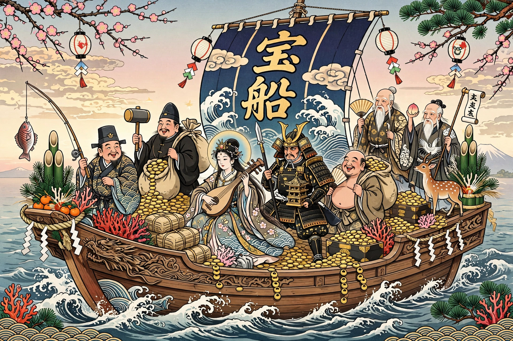

| Seven Lucky Gods (Shichifukujin) | |
|---|---|
| Members | Ebisu, Daikokuten, Bishamonten, Benzaiten, Fukurokuju, Jurōjin, Hotei |
| Origins | Japanese, Indian (Hindu/Buddhist), Chinese (Taoist/Buddhist) |
| Vessel | The Takarabune (treasure ship) |
| Custom | Shichifukujin pilgrimages at New Year |

The Seven Lucky Gods or Seven Gods of Fortune (七福神, Shichifukujin) are a group of seven deities of good luck in Japanese mythology and folklore. The group reflects Japan's syncretic religious culture: only one of the seven, Ebisu, is a native Japanese kami; three derive from Indian Hinduism as transmitted through Buddhism, and three from Chinese Taoism and Buddhism.
The gods are often depicted together aboard the Takarabune, a treasure ship loaded with gold, coral and the inexhaustible purse, which sails into port on New Year's Eve. A picture of the ship placed under the pillow on the night of 1–2 January is believed to bring a lucky first dream (hatsuyume). In January many Japanese make pilgrimages to seven shrines and temples, one for each god (Shichifukujin meguri), collecting stamps and stamps of the gods on nōsatsu or calligraphy scrolls — a custom dating to the Edo period.